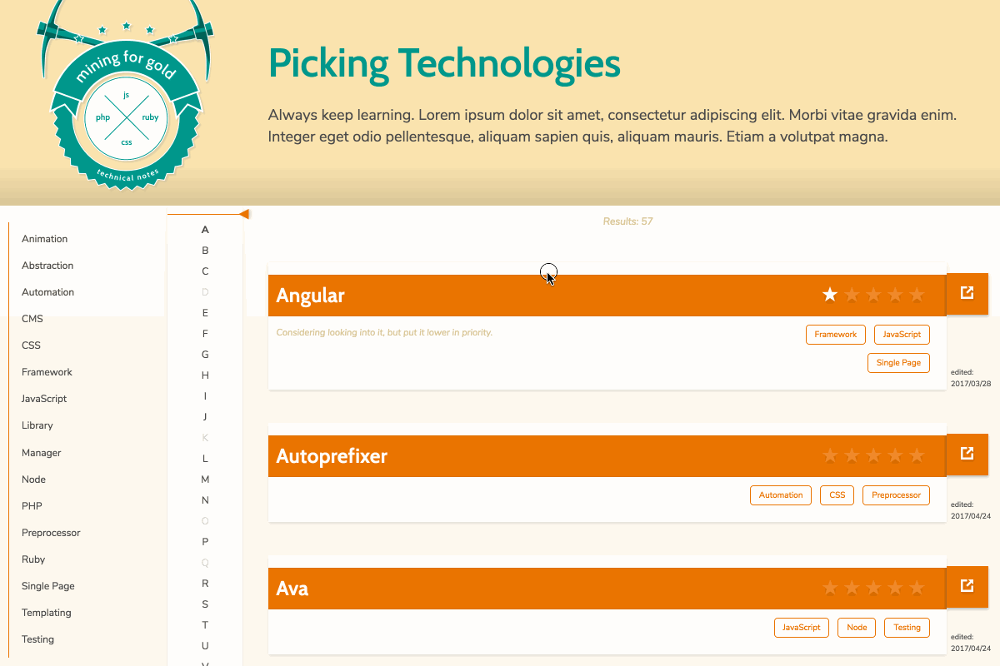
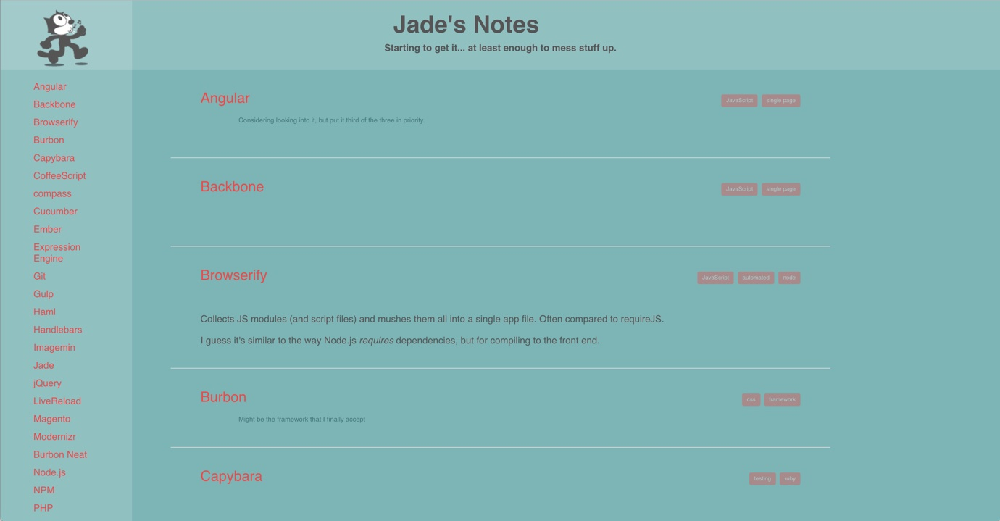
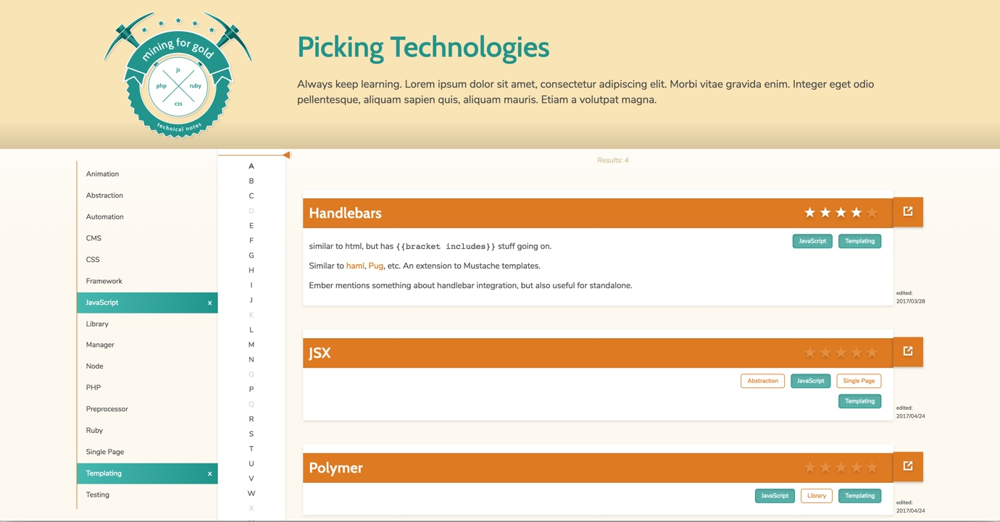
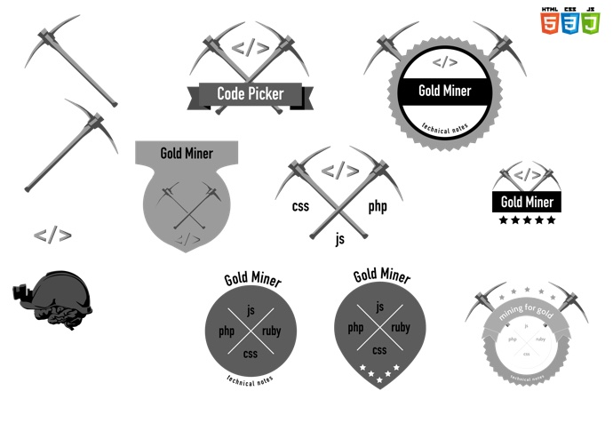
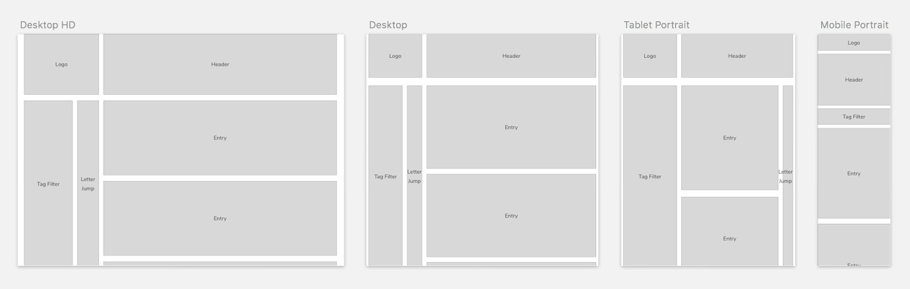
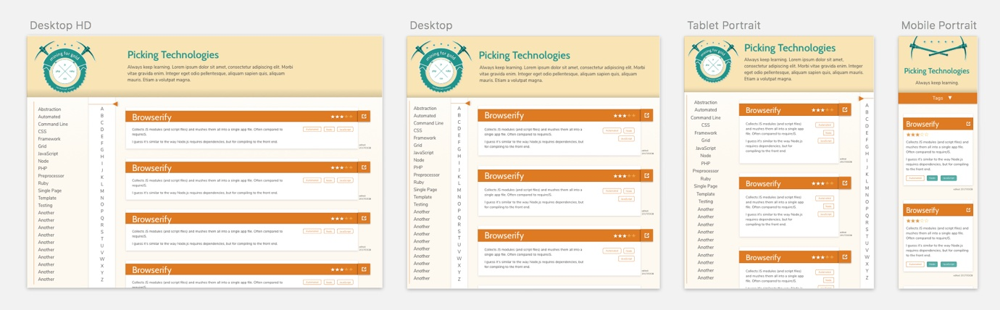

IMPORTANT NOTE
The current status of the development is smack dab in the middle (insert 1999 under construction gif here). Some features aren't complete, content is a little sparse, and there's some buggy aspects still floating around, but it's getting there.

Technology stops for no one. I've found that part of being a web developer inherently involves dabbling in new things, taking what you know from solution A and seeing if solution B needs something else.
A few years back I was starting to write down some of my thoughts on various technologies, languages, libraries, etc. This could have just been a list of notes on my computer some where, but I also had some time and interest in getting my hands dirty in a few new (to me) technologies.
More recently I found myself in a similar place, wanting to have a project where I could dive into React. So my note keeper project got a whole new iteration. After some more intentional rebranding and design, I completely started fresh on the code.
Content-wise, the notes are completely personal thoughts at the time of writing. They're opinionated, and very possibly inaccurate, but a helpful way for me to keep tabs on the different things that I've come across.
Original 
Current 
Here's a little window into the visual redesign.
Some of the branding exploration 
Wires 
Design Comps 
React
The important part of this iteration was to build a React based single page web app. So it has everything you'd expect from that, most notably the component based structure.
File formats are .jsx to take advantage of the inline syntax that offers. Also taking advantage of next generation JavaScript is achieved through the use of Babel, notably with "presets": ["es2015", "react", "stage-2"].
A few other notes on React is the declaration of Prop Types and using states when appropriate.
Webpack
Original development was driven through the gulp task runner and browserify for the app bundler. Both those have been scrapped in favor of using Webpack.
A simple yarn script starts a middlewhere instance (in memory) so that any dev changes triggers hot reloading of component or sass changes negating full reloads.
Sass
The CSS builds from .scss files organized into tiers of Variables > Elements > Sections > Components (with a Vendor folder thrown in there).
An important organizational difference is that the section and component level of Sass files are included right in the corresponding jsx file. See the Structure section of the readme for a visual representation of this relationship.
Responsive behavior is achieved through a primarily flexbox based structure as well as a mobile first approach.
"extends": ["eslint:recommended", "plugin:react/recommended"] as the primary rule sets."extends": "stylelint-config-standard" as the primary rule set.A running list of potential larger features can be found here.
Interested in the Nitty Gritty? The current TODO list can be found here.